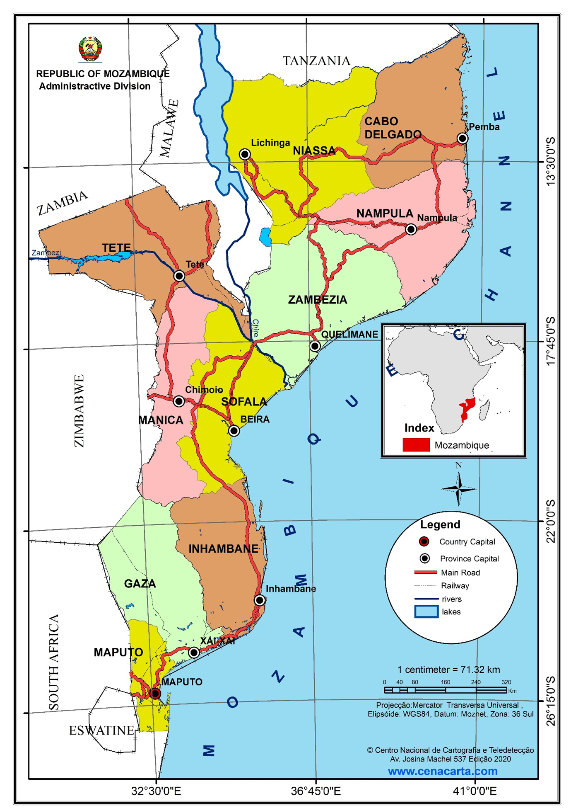
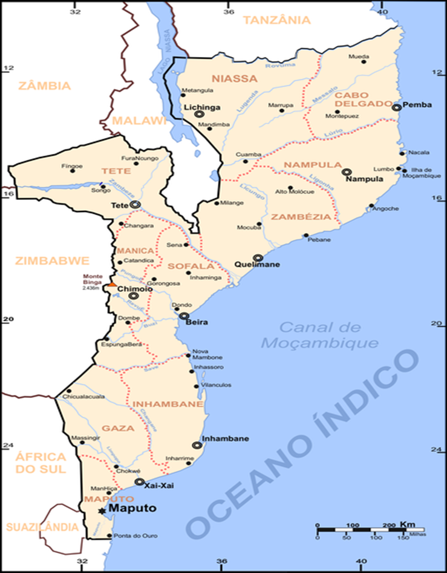
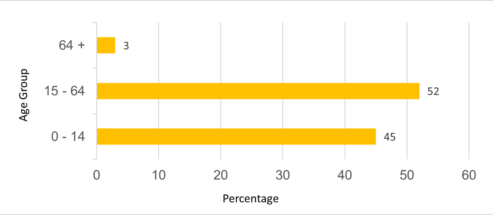

Chapter 3 National Context
3.1 National Circumstances
(From Second National Communication Draft)
3.1.1 Geography
The Republic of Mozambique is situated in the southern hemisphere, on the south-eastern coast of the African continent, between latitudes 10º27’S and 26º52’S and meridians 30º12’E and 40º51’E. The country has an area of 801,590 km2 of dry land and about 13,000 km² of inland water. The eastern part of the country is bathed by the Indian Ocean, with a coastline of approximately 2,700 km. In its northern part, it is bordered by Tanzania; to the northwest by Zambia, Malawi and Lake Niassa; Zimbabwe, to the west; South Africa, to the southeast; and to the south, by E-Swatini (then Swaziland), on a terrestrial international boundary line approximately 4,330 km long. To the east, the country is bounded by the Indian Ocean and separated from Madagascar by the Mozambique Channel (Figure 1.1).
Administratively, the country is divided into 10 provinces. However, the municipality of Maputo city (the country’s capital) has the status of a province, bringing the number to 11. The provinces are currently divided into 154 districts (26 more districts from the previous 128) which, in turn, are divided into 419 local administrative districts, called administrative posts. The latter are made up of 1,052 Localities, the lowest level of administrative configuration in the Mozambican State. To the subdivisions reported above are added 53 municipal authorities, of which 33 were created in 1998, another 10 in 2008 and another 10 in 2013.
There are numerous islands along the 2,700 km of coastline, including the Quirimbas archipelago in Cabo Delgado province, Ilha de Moçambique and the Goa and Sena islands in Nampula province, the Bazaruto archipelago in Inhambane, and the Inhaca, Portugueses and Xefina islands in Maputo province.
Figure 1.1: Map of Mozambique with international boundaries

Figure 1.2: Map of geographical location of Mozambique with appropriate administrative division by provinces.

3.1.2 Population
The Mozambican population is 27,909,798 inhabitants (INE 2017), with about 52% women and 48% men. The distribution by age group is about 45% for 0-14 years, 52% for 15-64 years and 3% for over 64 years (figure 1.3). The most widely spoken national languages in the country include KiSwahili, EMakhuwa, CiSena, XiNdau, XiTsonga, XiTchope, Guitonga, CiNyungwe, EChwabo, EKoti, ELomwe, CiNyanja, CiYao, XiMakonde and KiMwane, out of more than 40 languages in the country. The language adopted as official is Portuguese, inherited from the colonizing country, Portugal, from which Mozambique became independent on June 25, 1975.
Mozambique has registered significant population growth with an average annual rate of 2.4% over the last ten years. Between 2007 and 2017 there was a growth of 8.4 million inhabitants, against 4.4 million between 1997 and 2007 (figure 1.3). According to projections, the Mozambican population may exceed 50 million inhabitants by 2050. These data show how the demographic issue will play a very important role in the planning of the country’s socioeconomic development and the potential challenges for the management of natural resources that is the main source for the majority of the population, as well as the environment.
Figure 1.3: Population age structure (INE, 2017 census)

Source: http://www.ine.gov.mz/estatisticas/estatisticas-demograficas-e-indicadores-sociais/populacao
Other demographic indicators are shown in Table 1.1. This table highlights the reduction in the maternal and infant mortality rate, as well as the increase in life expectancy. The illiteracy rate has also decreased, although it is still high, particularly among women.
Table 1.1: Evolution of demographic indicators in Mozambique between 1980 - 2017

3.1.3 Economy
Agriculture in Mozambique is the pillar of the national economy. The sector employs 90% of the female labour force and 70% of the male labour force, that is, 80% of the Mozambican active population works in the agricultural sector (PEDSA, 2011). Agriculture has an average share in GDP above 20% of the total. The trade and transport and communications services sectors contributed an average of 10% each (Table 1.3). The extractive industry sector has shown great performance in recent years, rising from 2% in 2013 to just over 7% in 2018 (INE: National Accounts of Mozambique). The national economy has considerable potential in the primary sector, driven by the existence of natural resources, but the main challenge is the development of industries that allow for the sustainable exploration and transformation of these resources. Diversification of the national economy is still a challenge for more stable, comprehensive and sustainable growth. The Mozambican economy, after several years of growth of about 7% per year, has slowed since 2016, due to various factors of international and national conjuncture (table 1.2).
Table 1.2: Evolution of Economic Indicators, 2008-2018

Table 1.3: Contribution of sectors to GDP
 Source: INE: National Accounts of Mozambique
Source: INE: National Accounts of Mozambique
3.1.4 Relief
The relief of the country is arranged in the form of an amphitheater, with a mountainous area in the west, which descends in flattened steps to the coastal plain in the east. Thus, according to altitude, plains, plateaus, mountains and depressions are identified in Mozambique. The coastal plain, with altitudes of up to 200 meters, extends along the entire coastal strip, narrowing from the mouth of the Rovuma river to the Zambeze delta and extending southwards to the so-called great Mozambican plain, up to Ponta de Ouro. It occupies 1/3 of the national territory. There are also the so-called depression plains which extend along the valleys of the main rivers, eventually receiving the name of the respective hydrographic basins, for example: Incomati Plain, Limpopo Plain, Save Plain, Búzi Plain, Lúrio Plain, Lugela Plain, Messalo Plain and Zambezi Plain.

(From General Outline Prototype NAP)
3.1.5 Geography
Mozambique is situated on the Eastern coast of Southern Africa, between 10º27´S and 26º52´S latitudes and 30º12´E and 40º51´E longitudes. The total land area is 784,090 Km². The country is divided into 11 provinces including Maputo city, which is also considered a province. About 70% of the coutry is covered by savanna and secondary forests. Approximately 45% of the territory has potential fos agriculture.
About 60% of the land is classified as managed land, including agriculture and permanent pasture lands. The shelf area up to 200m depth and 104 Km² and the total area of the Exclusive Economic Zone is 562 Km².
The climate in the Northern region of the Zambezi River is under the influence of the equatorial low – pressure zone with a NE monsoon in the warm season. The climate in the Southern area of Zambezi River is influenced by subtropical anti-cyclonic zone. In the North of Sofala, along the Zambezi River, lays a transitional zone with high rainfall figures.
In the North of Mozambique, the winds are influenced by the monsoon system with NE winds during the southern summer and SWwinds during the southern winter. Central and Southern Mpzambique are dominated by the SE trade winds.
The average annual precipitation is about 1200 mm. The rainfall is mainly restricted to the warm season, November to April. According to the classification of Köppen, the Norther areas ( Cabo Delgado, Niassa, Nampula and Zambezia) and the coastal region climate is classified as tropical rain savanna, whereas the climate of the upland areas of the interior is humid and temperate. Ocean currents, particularly the Mozambique warm current, may influence the rainfall.
Mozambique has more than 100 rivers. The major ones are: Rovuma, Lurio and Zambezi in North, Pungue, Buzi, Gorongosa and Save in the center and Limpopo, Incomati and Maputo in the South. These rivers drain about 208 Km3 of water rich in nutrients into the coastal waters. About 80% of this water enters the ocean from Sofala Bank, central Mozambique. Zambezi River, the largest river in Eastern Africa, alone, contributes with 67% of the total river discharge in the whole country.
The tidal rangr is about 2m in the South, 3.1m in the North and about 6.4m in the Center. High range in the center is throught to be related to both the shallowness and channel effects. The tidal wave entering the Mozambique Channel through the South would, due to Coriolis, induce an increment in the Mozambican coast.
In terms of administrative divisions and, in accordance with Mozambican Constitution, Mozambique is divided into eleven provinces, which are sub-diveded into 154 districts, Administrative Post and urban centres, which have also a special politicao-administrative status.
Source: Initial Communication 2003